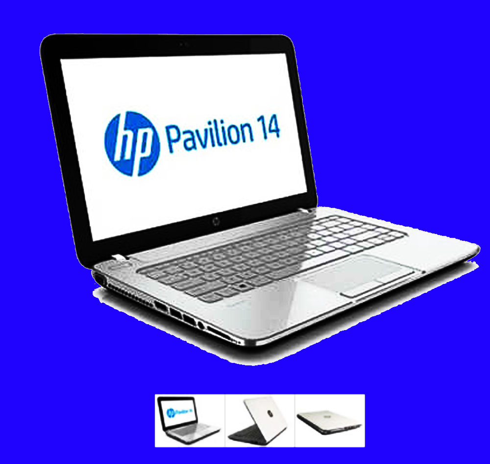
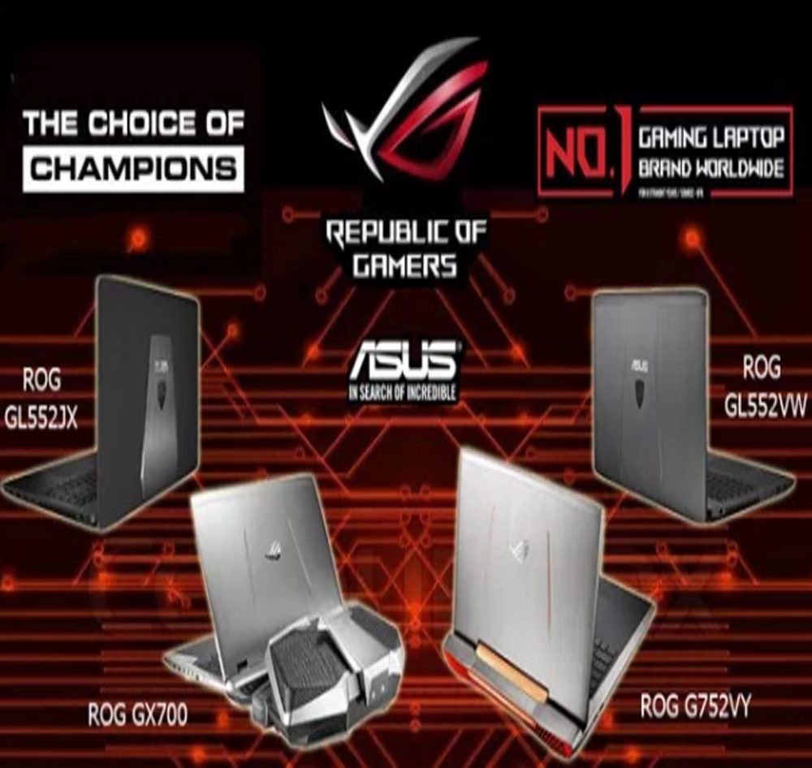
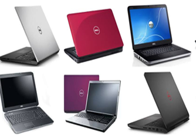

Berikut beberapa kelebihan spesifikasi dari notebook HP Pavilion 14-V041TX yang bisa anda pertimbangkan dengan baik : Microprocessor yang digunakan adalah 1.7 GHz intel core i5-421UO dengan Nvidia GeForce GT840 2GB. Memori mencapai 4 GB 1600 MHz sehingga cukup besar untuk menampung semua file anda secara maksimal. Dilengkapi dengan wireless connectivity 802.11 b/g/n (1×1) dan bluetooth 4.0 combo agar memudahkan anda untuk melakukan koneksi secara maksimal. Anda bisa menikmati suaranya secara maksimal dengan beats audio berjumlah 2 speaker. Terdapat slot PC card dengan 1 multi-format SD media card reader sehingga anda bisa memasangkan kartu apapun untuk memindahkan file. Berat bodinya hanya 1.98 kg sehingga cukup ringan untuk anda bawa kemana-mana dan tentunya tidak merepotkan karena beratnya. Internal portsnya sangat lengkap yaitu ada 1 USB 3.0, HDMI, RJ-45 dan headphone atau microphone combo. Operating System yang ditanamkan di dalamnya adalah free DOS 2.0 sehingga akan sangat membantu anda dalam menggunakan notebook ini secara maksimal. Jika anda ingin membeli sebuah notebook dan laptop tentu menginginkan yang memang memiliki kelebihan sesuai kebutuhan anda. Untuk bisa mengetahui apakah notebook HP Pavilion 14-V041TX tentu anda harus mempertimbangkan spesifikasinya apakah sudah memenuhi keunggulan yang anda butuhkan. Jangan sampai anda membeli notebook yang spesifikasinya kurang sesuai dengan kebutuhan karena akan menjadi sangat sisa-sia dan disayangkan.
Spesifikasi notebook HP Pavilion 14-V041TX
Berikut beberapa kelebihan spesifikasi dari notebook HP Pavilion 14-V041TX yang bisa anda pertimbangkan dengan baik : Microprocessor yang digunakan adalah 1.7 GHz intel core i5-421UO dengan Nvidia GeForce GT840 2GB. Memori mencapai 4 GB 1600 MHz sehingga cukup besar untuk menampung semua file anda secara maksimal. Dilengkapi dengan wireless connectivity 802.11 b/g/n (1×1) dan bluetooth 4.0 combo agar memudahkan anda untuk melakukan koneksi secara maksimal. Anda bisa menikmati suaranya secara maksimal dengan beats audio berjumlah 2 speaker. Terdapat slot PC card dengan 1 multi-format SD media card reader sehingga anda bisa memasangkan kartu apapun untuk memindahkan file. Berat bodinya hanya 1.98 kg sehingga cukup ringan untuk anda bawa kemana-mana dan tentunya tidak merepotkan karena beratnya. Internal portsnya sangat lengkap yaitu ada 1 USB 3.0, HDMI, RJ-45 dan headphone atau microphone combo. Operating System yang ditanamkan di dalamnya adalah free DOS 2.0 sehingga akan sangat membantu anda dalam menggunakan notebook ini secara maksimal. Jika anda ingin membeli sebuah notebook dan laptop tentu menginginkan yang memang memiliki kelebihan sesuai kebutuhan anda. Untuk bisa mengetahui apakah notebook HP Pavilion 14-V041TX tentu anda harus mempertimbangkan spesifikasinya apakah sudah memenuhi keunggulan yang anda butuhkan. Jangan sampai anda membeli notebook yang spesifikasinya kurang sesuai dengan kebutuhan karena akan menjadi sangat sisa-sia dan disayangkan.
Laptop Lainnya

Spesifikasi rog lainya
Watch Now
